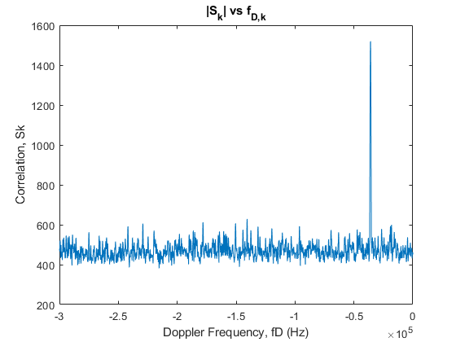
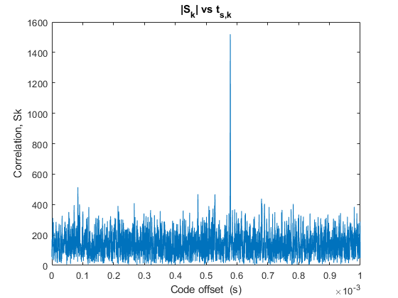

Contents
Load Data from rawtrimmed_158.bin
clear; close all; clc;
Get Signal
Tfull = 0.5;
fs = 40e6/7;
N = fs*Tfull;
N = floor(N/16)*16;
nfft = 2^10;
fIF = 1.610476e6;
fid = fopen("C:\Users\gsh04\Desktop\2024-Fall\GPS\exam2\problem 5\dataout_raw_trimmed_158.bin",'r','l');
[Y,count] = binloadSamples(fid,N,'dual');
Y = Y(:,1);
Genererate Code
nStages = 10;
ciVec1 = [10, 3]';
ciVec2 = [10, 9, 8, 6, 3, 2,]';
a0Vec1 = ones(nStages,1);
a0Vec2 = ones(nStages,1);
Tc = 1e-3/1023;
T = 1/fs;
delChip = T/Tc;
Np = 2^nStages - 1;
Ns = length(Y);
Ta = 0.001;
Nk = floor(Ta/T);
codeOS = zeros(Nk,37);
G2tab = [2,6;3,7;4,8;5,9;1,9;2,10;1,8;2,9;3,10;2,3;3,4;5,6;6,7;7,8;...
8,9;9,10;1,4;2,5;3,6;4,7;5,8;6,9;1,3;4,6;5,7;6,8;7,9;8,10;1,6;2,7;...
3,8;4,9;5,10;4,10;1,7;2,8;4,10];
parfor j = 1:length(G2tab)
[GoldSeq] = generateGoldLfsrSequenceCA(nStages,ciVec1,ciVec2,a0Vec1,...
a0Vec2,G2tab(j,:));
GoldSeq = 2*GoldSeq - 1;
GoldSeqOS = oversampleSpreadingCode(GoldSeq,delChip,0,Nk,Np);
codeOS(:,j) = GoldSeqOS;
end
fD = [-300000:100:0];
tk = [0:Nk-1]'*T;
PF = 0.05;
sigmaIQ = 149;
threshold = 39.5;
CN0 = zeros(37,1);
for mm =1:37
for kk = 1:length(fD)
Cr = fft(codeOS(:,mm));
fi = fD(kk) + fIF;
xkTilde = Y(1:Nk).*exp(-1i*2*pi*fi*tk);
XrTilde = fft(xkTilde);
Zr = XrTilde.*(conj(Cr));
zk = ifft(Zr);
[maxValue,kmax] = max(abs(zk).^2);
CN0(mm) =10*log10((maxValue-2*sigmaIQ^2)/(2*sigmaIQ^2*Ta));
if CN0(mm) > threshold
signalStrenghth(mm)=CN0(mm);
start_time(mm) = tk(kmax+1)*10^6;
apparent_fD(mm) = fD(kk);
disp('----------------------------------------------------------')
disp(['PRN :',num2str(mm)])
disp(['Apparent Doppler Frequency: ', num2str(apparent_fD(mm)), ' Hz']);
disp(['Approximate Start Time from first sample: ', num2str(start_time(mm)), ' microseconds']);
disp (['C/N0: ', num2str(CN0(mm))])
break;
end
end
end
----------------------------------------------------------
PRN :1
Apparent Doppler Frequency: -34300 Hz
Approximate Start Time from first sample: 411.075 microseconds
C/N0: 41.491
----------------------------------------------------------
PRN :11
Apparent Doppler Frequency: -36500 Hz
Approximate Start Time from first sample: 578.55 microseconds
C/N0: 41.8547
----------------------------------------------------------
PRN :18
Apparent Doppler Frequency: -34800 Hz
Approximate Start Time from first sample: 370.125 microseconds
C/N0: 41.5946
----------------------------------------------------------
PRN :21
Apparent Doppler Frequency: -135200 Hz
Approximate Start Time from first sample: 42.875 microseconds
C/N0: 39.7039
----------------------------------------------------------
PRN :29
Apparent Doppler Frequency: -287200 Hz
Approximate Start Time from first sample: 584.85 microseconds
C/N0: 39.514
Find the best estimates for fd and ts
[~,strongPrn] = max(CN0)
for hh = 1:length(fD)
Cr = fft(codeOS(:,strongPrn));
fi = fD(hh) + fIF;
xkTilde = Y(1:Nk).*exp(-1i*2*pi*fi*tk);
XrTilde = fft(xkTilde);
Zr = XrTilde.*(conj(Cr));
zk = ifft(Zr);
Sk(hh) = max(abs(zk));
end
figure,
plot(fD,Sk)
ylabel('Correlation, Sk')
xlabel('Doppler Frequency, fD (Hz)')
title(['|S_k| vs f_{D,k}'])
[~,idx] = max(Sk);
fd_best = fD(idx);
Cr = fft(codeOS(:,strongPrn));
fi = fd_best + fIF;
xkTilde = Y(1:Nk).*exp(-1i*2*pi*fi*tk);
XrTilde = fft(xkTilde);
Zr = XrTilde.*(conj(Cr));
zk = ifft(Zr);
Sk = abs(zk);
figure,
plot(tk,Sk)
ylabel('Correlation, Sk')
xlabel('Code offset (s)')
title(['|S_k| vs t_{s,k}'])
strongPrn =
11
 
Weak Signal Search
fD = [-300000:100:0];
tk = [0+110e-3:Nk-1+110e-3]'*T;
threshold = 36;
CN0 = zeros(37,1);
for mm = 31
for kk = 1:length(fD)
Cr = fft(codeOS(:,mm));
fi = fD(kk) + fIF;
Y = Y(round(110e-3/T):end);
xkTilde = Y(1:Nk).*exp(-1i*2*pi*fi*tk);
XrTilde = fft(xkTilde);
Zr = XrTilde.*(conj(Cr));
zk = ifft(Zr);
[maxValue,kmax] = max(abs(zk).^2);
CN0(mm) =10*log10((maxValue-2*sigmaIQ^2)/(2*sigmaIQ^2*Ta));
if CN0(mm) > threshold
signalStrenghth(mm)=CN0(mm);
start_time(mm) = tk(kmax+1)*10^6;
apparent_fD(mm) = fD(kk);
disp('----------------------------------------------------------')
disp(['PRN :',num2str(mm)])
disp(['Apparent Doppler Frequency: ', num2str(apparent_fD(mm)), ' Hz']);
disp(['Approximate Start Time from first sample: ', num2str(start_time(mm)), ' microseconds']);
disp (['C/N0: ', num2str(CN0(mm))])
break;
end
end
end
----------------------------------------------------------
PRN :31
Apparent Doppler Frequency: -300000 Hz
Approximate Start Time from first sample: 173.7942 microseconds
C/N0: 36.9558